Projet GSB
Projet GSB — Mise en place d'une infrastructure réseau Projet réalisé en équipe de 3 · BTS SIO SISR · 2026 Contexte Ce projet a été réalisé dans le cadre de notre formation BTS SIO option SISR. En groupe de 3, nous avons conçu et déployé une infrastructure réseau complète depuis zéro. Les tâches ont été réparties entre les membres de l'équipe et coordonnées via Notion, avec un espace partagé sur Google Drive pour centraliser toute la documentation. Infrastructure mise en place L'infrastructure repose sur du matériel physique : un routeur Cisco, un pare-feu Stormshield, un switch de niveau 3 et un switch de niveau 2, ainsi qu'un serveur HP ProLiant configuré en RAID 5. Sur ce serveur, nous avons déployé l'hyperviseur Proxmox hébergeant plusieurs machines virtuelles : OPNsense (pare-feu interne), Windows Server (Active Directory & DNS), des serveurs applicatifs (GLPI, NextCloud, LogAnalyzer), une base de données répliquée, un serveur de journalisation Rsyslog et un poste d'administration sous Fedora. Organisation réseau Le réseau comprend 24 VLANs, un plan d'adressage complet, et le routage est assuré entre les différents équipements avec du NAT vers Internet. Avant tout déploiement physique, l'infrastructure a été simulée sur Cisco Packet Tracer afin de valider le plan d'adressage et le fonctionnement global. Répartition des tâches Bien que chaque membre ait participé à toutes les étapes du projet, nous nous sommes réparti des responsabilités principales pour avancer efficacement. Sur Proxmox, je me suis concentré sur la mise en place du serveur LAP hébergeant les services NextCloud et GLPI, le déploiement de la base de données avec une réplication entre deux instances pour assurer la redondance, ainsi que la mise en œuvre d'une solution de haute disponibilité (HA) au niveau du LAP. J'ai également configuré le DNS sur Windows Server pour le domaine intranet, en assurant la résolution des différents services que j'avais mis en place. Organisation de l'équipe Nous avons utilisé Notion dès le début du projet pour organiser et suivre l'avancement des tâches. Toute la documentation (schéma réseau, plan d'adressage, fiches de flux) a été maintenue à jour en continu sur Google Drive tout au long du projet.
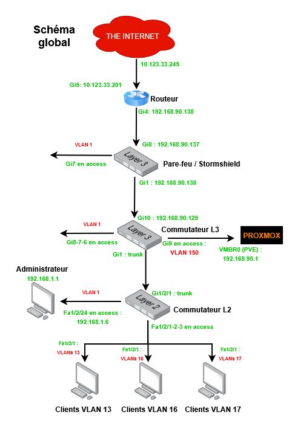
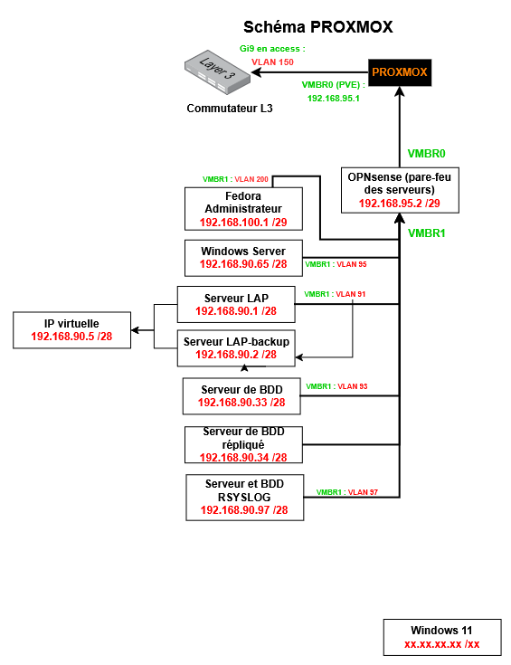
Projet 2
Lors de ce projet, j'ai effectué de la maintenance informatique, installé des postes utilisateurs et assisté les utilisateurs.
Mes compétences
Système & Réseaux
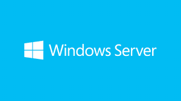
Windows Server
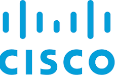
Cisco Ios
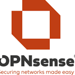
OPNsense
Services Réseaux
Bind9
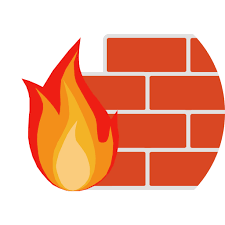
Iptables
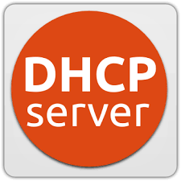
Isc-dhcp-server
Système d'Exploitations
Fedora
Debian
Système Windows

Proxmox
Langages et Système web
Html
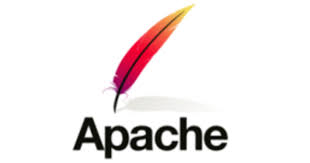
Apache
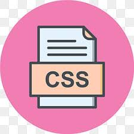
CSS

Mysql

Mariadb
Cybersécurité
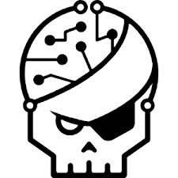
Rootme
Mes certifications
Certification Pix
Validation des compétences numériques
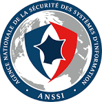
MOOC ANSSI
SecNumacadémie - Cybersécurité
Cisco Networking
Notions réseaux et protocoles
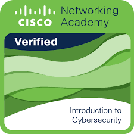
Cisco Networking
Introduction to cybersécurité